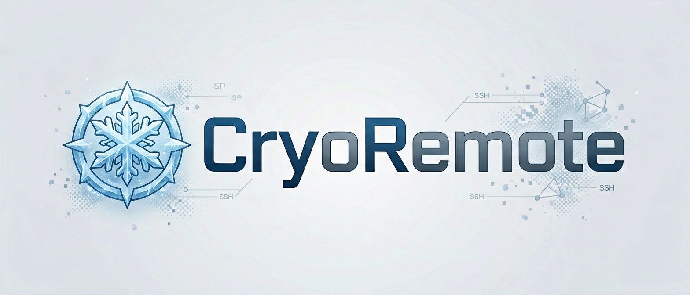
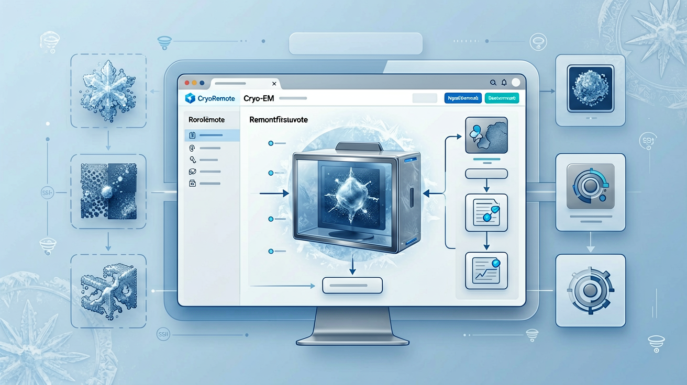

CryoRemote provides an SSH/SFTP-oriented RELION-first project browser inside ChimeraX.
It imports direct OpenSSH aliases from ~/.ssh/config, browses remote files,
indexes RELION projects from remote default_pipeline.star, previews metadata and MRC headers,
and caches maps/models locally before opening them in ChimeraX.

.star, .txt, .log, .json, .out, .err, and .cxc remotely with execution confirmation.mrc, .map, .pdb, .cif, and source copies of remote .cxc files locally before opening.cxc by rewriting supported open ... file operands to local cache paths and then opening the rewritten local command file in ChimeraXProxyJump, ProxyCommand, Include, and Match are detected and warned about, but not implemented in phase 1.cxc support only rewrites the leading file operands of open ...; nested .cxc, forEachFile, coords, and other option-level path semantics are not rewritten.cs, Slurm integration, and arbitrary remote command execution are deferred